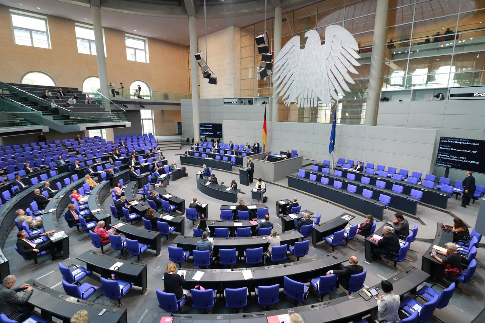

A new political coalition has emerged on the Nepalese political scene, promising change and reform ahead of the upcoming elections. The coalition, comprising several prominent parties, aims to address key issues facing the nation and provide a strong alternative to existing political entities. The coalition's platform includes initiatives to tackle corruption, improve governance, and promote economic development. Leaders of the coalition have expressed their commitment to
working together for the betterment of the country, emphasizing the importance of unity and collaboration in achieving their goals.
Government Announces New Policy Initiatives to Boost Economy

Image Source: Government Office
The government has unveiled a series of new policy initiatives aimed at stimulating economic growth and investment. These initiatives include tax incentives for businesses, infrastructure development projects, and measures to attract foreign investment. The government aims to create a more conducive environment for business and entrepreneurship, with a focus on supporting small and medium-sized enterprises. Additionally, the government plans to invest in key sectors such as
technology, tourism, and agriculture to drive economic growth and create employment opportunities.